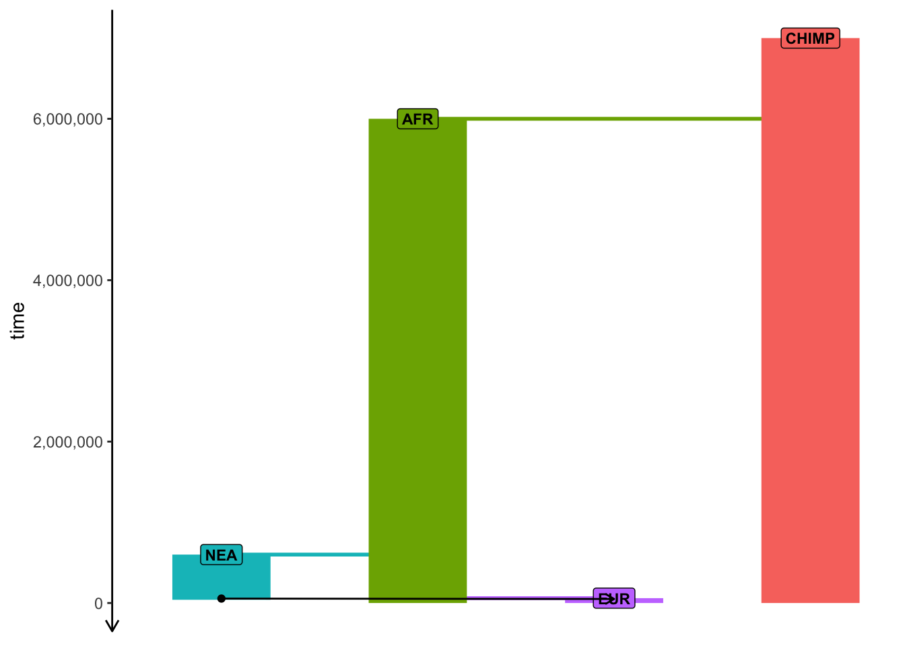
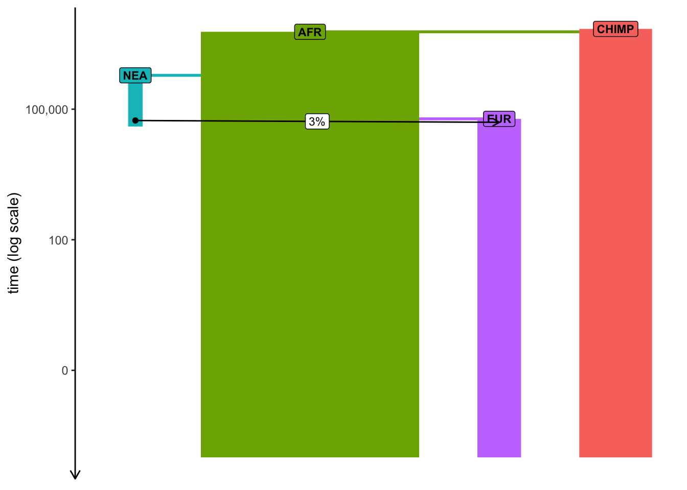

In this exercise, you will practice building demographic models from scratch using the programmable interface provided by the slendr R package. In this context, you can understand “demographic model” as “a tree-like topological structure encoding the relationships between populations and gene flows between them”. For the time being, these models will be always neutral and will conform to Wright-Fisher assumptions.
Note: This exercise session is split into individual “Parts” intended to be solved in order. Different tasks within each individual Part are highlighted in bold.
If you ever get totally stuck, take a look at the provided solution. The point of these exercises is to learn things, not fight through endless frustration. That said, try not to look at the solution automatically, always take a stab at solving each exercise on your own first.
Part 1: Building a demographic model in slendr
Use functions such as population(), gene_flow(), and compile_model(), which we discussed in “Introduction to slendr”, to program the following toy model of human demographic history in slendr. (Apologies for my bad handwriting and the lack of any artistic skill.)
Note: You could easily program the model so that different ancestral populations are represented by separate population() commands (i.e., your model would start with a population called “human_chimp_ancestor” from which a “CHIMP” and “hominin_ancestor” populations would split at 6 Mya, etc.) but generally this is too annoying to do and requires too much code.
Feel free to write the model so that “CHIMP” is the first population, then “AFR” population splits from it at 6 Mya, etc… Although it probably isn’t the most accurate way to describe the real evolutionary history, it simplifies the coding significantly.
[Mya = million years ago; kya = thousand years ago]
Hint: Create a new script models.R in your RStudio session using the following “template”. Then add a sequence of appropriate population() calls using the syntax from the introductory slides (using the parent = <pop> argument for programming splits of daughter populations – which will be all except the CHIMP lineage in our example), etc.
library(slendr)init_env()# <replace this with `population()` definitions like in the slides># <replace this with your gene-flow definition in variable `gf`>model <-compile_model(populations =list(...), # <put your list of populations here>gene_flow = gf,generation_time =30)
Note: With slendr you can specify time in whatever format is more convenient or readable for your model. For instance here, because we’re dealing with historical events which are commonly expressed in times given as”years ago”, we can write them in a decreasing order – i.e. 7Mya → 6Mya → …, as shown above – or, in terms of R code, 7e6 (or 7000000), 6e6 (6000000), etc.
In a later example, you will see that you can also encode the events in the time direction going “forward” (i.e., the first event starting in generation 1, a following event in generation 42, and so on).
Hint: Remember that slendr is designed with interactivity in mind! When you write a chunk of code (such as a command to create a population through a population split, or model compilation to create a model object), execute that bit of code in the R console and inspect the summary information printed by evaluating the respective R object you just created. You can either copy-pasted stuff from your script to the R console, or use a convenient RStudio shortcut like Ctrl+Enter (Linux and Windows), or Cmd+Enter (Mac).
Click to see the solution
library(slendr)init_env()## The interface to all required Python modules has been activated.dir.create("files/popgen/introgression", recursive =TRUE, showWarnings =FALSE)# Chimpanzee outgroupchimp <-population("CHIMP", time =7e6, N =5000)# Two populations of anatomically modern humans: Africans and Europeansafr <-population("AFR", parent = chimp, time =6e6, N =15000)eur <-population("EUR", parent = afr, time =60e3, N =3000)# Neanderthal population splitting at 600 ky ago from modern humans# (becomes extinct by 40 ky ago)nea <-population("NEA", parent = afr, time =600e3, N =1000, remove =40e3)# Neanderthal introgression event (3% admixture between 55-50 kya)gf <-gene_flow(from = nea, to = eur, rate =0.03, start =55000, end =50000)# Compile the entire model into a single slendr R objectmodel <-compile_model(populations =list(chimp, nea, afr, eur),gene_flow = gf,generation_time =30,path ="files/popgen/introgression", # <--- don't worry about these twooverwrite =TRUE, force =TRUE# <--- lines of code (ask me if interested))
Part 2: Inspecting the model visually
To visualize a slendr model, you use the function plot_model(). Plot your compiled model to make sure you programmed it correctly! Your figure should roughly correspond to my doodle above.
Note: Plotting of models in slendr can be sometimes a little wonky, especially if many things are happening at once. When plotting your model, experiment with arguments log = TRUE, proportions = TRUE, gene_flow = TRUE. Check ?plot_model for more information on these.
Click to see the solution
plot_model(model)
plot_model(model, sizes =FALSE)

plot_model(model, sizes =FALSE, log =TRUE)
plot_model(model, log =TRUE, proportions =TRUE)

Part 3: Simulating genomic data
Once you have a compiled slendr model stored in an R variable (from now on, model will always mean a variable containing a compiled slendr model object relevant for the given exercise, for simplicity), we can simulate data from it. By default, slendr models always produce a tree sequence.
Note: Tree sequence provides an extremely efficient means to store and work with genomic data at a massive scale. However, you can always get simulated data even in traditional file formats, such as VCF, EIGENSTRAT, or a plain old table of ancestral/derived genotypes.
In this activity we will be only working with tree sequences, because it’s much easier and faster to get interesting statistics from it directly in R.
There are two simulation engines built into slendr implemented by functions msprime() and slim(). For traditional, non-spatial, neutral demographic models, the engine provided by the msprime() function is much more efficient, so we’ll be using that for the time being. However, from a popgen theoretical perspective, both simulation functions will give you the same results for any given compiled slendr model (up to some level of stochastic noise, of course).
Note: Yes, this means you don’t have to write any msprime (or SLiM) code to simulate data from a slendr model!
Here’s how you can use the function to simulate a tree sequence from the model you’ve just created using compile_model() in your script:
ts <-msprime( model,sequence_length =<length of sequence to simulate [as bp]>,recombination_rate =<uniform recombination rate [per bp per generation]>)
You will be seeing this kind of pattern over and over again in this exercise, so it’s a good idea to keep it in mind.
Hint: The msprime() function has also arguments debug and run which can be extremely useful for debugging.
Simulate a tree sequence from your compiled model using the msprime() engine, storing it to a variable ts as shown right above. Use sequence_length = 1e6 (so 1 Mb of sequence) and recombination_rate = 1e-8 (crossover events per base pair per generation). Then experiment with setting debug = TRUE (this prints out msprime’s own debugging summary which you might already be familiar with from your previous activity?) and then run = FALSE (this prints out a raw command-line which can run a slendr simulation in the shell).
Click to see the solution
# This simulates a tskit tree sequence from a slendr model. Note that you didn't have# to write any msprime or tskit Python code!ts <-msprime(model, sequence_length =1e6, recombination_rate =1e-8)# Setting `debug = TRUE` instructs slendr's built-in msprime script to print# out msprime's own debugger information. This can be very useful for debugging,# in addition to the visualization of the model as shown above.ts <-msprime(model, sequence_length =1e6, recombination_rate =1e-8, debug =TRUE)## DemographyDebugger## ╠═════════════════════════════════════╗## ║ Epoch[0]: [0, 1.67e+03) generations ║## ╠═════════════════════════════════════╝## ╟ Populations (total=4 active=4)## ║ ┌─────────────────────────────────────────────────────────────────────┐## ║ │ │ start│ end│growth_rate │ CHIMP │ AFR │ NEA │ EUR │## ║ ├─────────────────────────────────────────────────────────────────────┤## ║ │ CHIMP│ 5000.0│ 5000.0│ 0 │ 0 │ 0 │ 0 │ 0 │## ║ │ AFR│ 15000.0│ 15000.0│ 0 │ 0 │ 0 │ 0 │ 0 │## ║ │ NEA│ 1000.0│ 1000.0│ 0 │ 0 │ 0 │ 0 │ 0 │## ║ │ EUR│ 3000.0│ 3000.0│ 0 │ 0 │ 0 │ 0 │ 0 │## ║ └─────────────────────────────────────────────────────────────────────┘## ╟ Events @ generation 1.67e+03## ║ ┌─────────────────────────────────────────────────────────────────────────────────────────┐## ║ │ time│type │parameters │effect │## ║ ├─────────────────────────────────────────────────────────────────────────────────────────┤## ║ │ 1666│Migration rate │source=EUR, dest=NEA, │Backwards-time migration rate from EUR │## ║ │ │change │rate=0.000179640718562 │to NEA → 0.00017964071856287425 │## ║ │ │ │87425 │ │## ║ └─────────────────────────────────────────────────────────────────────────────────────────┘## ╠════════════════════════════════════════════╗## ║ Epoch[1]: [1.67e+03, 1.83e+03) generations ║## ╠════════════════════════════════════════════╝## ╟ Populations (total=4 active=4)## ║ ┌───────────────────────────────────────────────────────────────────────────┐## ║ │ │ start│ end│growth_rate │ CHIMP │ AFR │ NEA │ EUR │## ║ ├───────────────────────────────────────────────────────────────────────────┤## ║ │ CHIMP│ 5000.0│ 5000.0│ 0 │ 0 │ 0 │ 0 │ 0 │## ║ │ AFR│ 15000.0│ 15000.0│ 0 │ 0 │ 0 │ 0 │ 0 │## ║ │ NEA│ 1000.0│ 1000.0│ 0 │ 0 │ 0 │ 0 │ 0 │## ║ │ EUR│ 3000.0│ 3000.0│ 0 │ 0 │ 0 │ 0.0001796 │ 0 │## ║ └───────────────────────────────────────────────────────────────────────────┘## ╟ Events @ generation 1.83e+03## ║ ┌────────────────────────────────────────────────────────────────────────────────────────┐## ║ │ time│type │parameters │effect │## ║ ├────────────────────────────────────────────────────────────────────────────────────────┤## ║ │ 1833│Migration rate │source=EUR, dest=NEA, │Backwards-time migration rate from EUR │## ║ │ │change │rate=0 │to NEA → 0 │## ║ │┈┈┈┈┈┈┈┈┈┈┈┈┈┈┈┈┈┈┈┈┈┈┈┈┈┈┈┈┈┈┈┈┈┈┈┈┈┈┈┈┈┈┈┈┈┈┈┈┈┈┈┈┈┈┈┈┈┈┈┈┈┈┈┈┈┈┈┈┈┈┈┈┈┈┈┈┈┈┈┈┈┈┈┈┈┈┈┈│## ║ │ 1833│Census │ │Insert census nodes to record the │## ║ │ │ │ │location of all lineages │## ║ └────────────────────────────────────────────────────────────────────────────────────────┘## ╠═════════════════════════════════════════╗## ║ Epoch[2]: [1.83e+03, 2e+03) generations ║## ╠═════════════════════════════════════════╝## ╟ Populations (total=4 active=4)## ║ ┌─────────────────────────────────────────────────────────────────────┐## ║ │ │ start│ end│growth_rate │ CHIMP │ AFR │ NEA │ EUR │## ║ ├─────────────────────────────────────────────────────────────────────┤## ║ │ CHIMP│ 5000.0│ 5000.0│ 0 │ 0 │ 0 │ 0 │ 0 │## ║ │ AFR│ 15000.0│ 15000.0│ 0 │ 0 │ 0 │ 0 │ 0 │## ║ │ NEA│ 1000.0│ 1000.0│ 0 │ 0 │ 0 │ 0 │ 0 │## ║ │ EUR│ 3000.0│ 3000.0│ 0 │ 0 │ 0 │ 0 │ 0 │## ║ └─────────────────────────────────────────────────────────────────────┘## ╟ Events @ generation 2e+03## ║ ┌───────────────────────────────────────────────────────────────────────────┐## ║ │ time│type │parameters │effect │## ║ ├───────────────────────────────────────────────────────────────────────────┤## ║ │ 2000│Population │derived=[EUR], │Moves all lineages from the 'EUR' │## ║ │ │Split │ancestral=AFR │derived population to the ancestral │## ║ │ │ │ │'AFR' population. Also set 'EUR' to │## ║ │ │ │ │inactive, and all migration rates to │## ║ │ │ │ │and from the derived population to │## ║ │ │ │ │zero. │## ║ └───────────────────────────────────────────────────────────────────────────┘## ╠══════════════════════════════════════╗## ║ Epoch[3]: [2e+03, 2e+04) generations ║## ╠══════════════════════════════════════╝## ╟ Populations (total=4 active=3)## ║ ┌───────────────────────────────────────────────────────────────┐## ║ │ │ start│ end│growth_rate │ CHIMP │ AFR │ NEA │## ║ ├───────────────────────────────────────────────────────────────┤## ║ │ CHIMP│ 5000.0│ 5000.0│ 0 │ 0 │ 0 │ 0 │## ║ │ AFR│ 15000.0│ 15000.0│ 0 │ 0 │ 0 │ 0 │## ║ │ NEA│ 1000.0│ 1000.0│ 0 │ 0 │ 0 │ 0 │## ║ └───────────────────────────────────────────────────────────────┘## ╟ Events @ generation 2e+04## ║ ┌────────────────────────────────────────────────────────────────────────────┐## ║ │ time│type │parameters │effect │## ║ ├────────────────────────────────────────────────────────────────────────────┤## ║ │ 2e+04│Population │derived=[NEA], │Moves all lineages from the 'NEA' │## ║ │ │Split │ancestral=AFR │derived population to the ancestral │## ║ │ │ │ │'AFR' population. Also set 'NEA' to │## ║ │ │ │ │inactive, and all migration rates to │## ║ │ │ │ │and from the derived population to │## ║ │ │ │ │zero. │## ║ └────────────────────────────────────────────────────────────────────────────┘## ╠══════════════════════════════════════╗## ║ Epoch[4]: [2e+04, 2e+05) generations ║## ╠══════════════════════════════════════╝## ╟ Populations (total=4 active=2)## ║ ┌─────────────────────────────────────────────────────────┐## ║ │ │ start│ end│growth_rate │ CHIMP │ AFR │## ║ ├─────────────────────────────────────────────────────────┤## ║ │ CHIMP│ 5000.0│ 5000.0│ 0 │ 0 │ 0 │## ║ │ AFR│ 15000.0│ 15000.0│ 0 │ 0 │ 0 │## ║ └─────────────────────────────────────────────────────────┘## ╟ Events @ generation 2e+05## ║ ┌──────────────────────────────────────────────────────────────────────────────┐## ║ │ time│type │parameters │effect │## ║ ├──────────────────────────────────────────────────────────────────────────────┤## ║ │ 2e+05│Population │derived=[AFR], │Moves all lineages from the 'AFR' │## ║ │ │Split │ancestral=CHIMP │derived population to the ancestral │## ║ │ │ │ │'CHIMP' population. Also set 'AFR' to │## ║ │ │ │ │inactive, and all migration rates to │## ║ │ │ │ │and from the derived population to │## ║ │ │ │ │zero. │## ║ └──────────────────────────────────────────────────────────────────────────────┘## ╠════════════════════════════════════╗## ║ Epoch[5]: [2e+05, inf) generations ║## ╠════════════════════════════════════╝## ╟ Populations (total=4 active=1)## ║ ┌─────────────────────────────────────────┐## ║ │ │ start│ end│growth_rate │## ║ ├─────────────────────────────────────────┤## ║ │ CHIMP│ 5000.0│ 5000.0│ 0 │## ║ └─────────────────────────────────────────┘# For debugging of technical issues (with msprime, with slendr, or both), it is# very useful to have the `msprime` function dump the "raw" command-line to# run the simulation on the terminal using plain Python interpretermsprime(model, sequence_length =1e6, recombination_rate =1e-8, run =FALSE)## /Users/mp/Library/r-miniconda-arm64/envs/Python-3.12_msprime-1.3.4_tskit-0.6.4_pyslim-1.0.4_tspop-0.0.2/bin/python /Users/mp/Code/simgen/files/popgen/introgression/script.py --seed 563690519 --model /Users/mp/Code/simgen/files/popgen/introgression --sequence-length 1000000 --recombination-rate 1e-08 --coalescent_only --path path_to_a_trees_file.trees
Part 4: Inspecting the tree-sequence object
As we will see later, slendr provides an R-friendly interface to accessing a subset of tskit’s functionality for working with tree sequences and for computing various popgen statistics.
For now, type out the ts object in the terminal – what do you see? You should get a summary of a tree-sequence object that you’re familiar with from your msprime and tskit activity earlier in the day.
Note: This is a very important feature of slendr – when a simulation is concluded (doesn’t matter if it was a slim() or msprime() simulation), you will get a normal tskit object. In fact, the fact that slendr supports (so far, and likely always) only a “subset” of all of tskit’s functionality isn’t stopping you to write custom Python/tskit processing code of a tree sequence generated from a slendr model. Under the hood, a slendr simulation really is just an msprime (or SLiM) simulation! It’s just executed through a simplified interface.
Click to see the solution
# Typing out the object with the result shows that it's a good old tskit# tree-sequence objectts
The brilliance of the tree-sequence data structure rests on its elegant table-based implementation (much more information on that is here). slendr isn’t really designed to run very complex low-level manipulations of tree-sequence data (its strength lies in the convenient interface to popgen statistical functions implemented by tskit), but it does contain a couple of functions which can be useful for inspecting the lower-level nature of a tree sequence. Let’s look at a couple of them now.
Use the ts_table function to inspect the low-level table-based representation of a tree sequence. For instance, you can get the table of nodes with ts_table(ts, "nodes"), edges with ts_table(ts, "edges"), and do the same thing for “individuals”, “mutations”, and “sites”. Does your tree sequence contain any mutations? If not, why, and how can we even do any popgen with data without any mutations? As you’re doing this, take a look at at the following figure (this was made from a different tree sequence than you have, but that’s OK) to help you relate the information in the tables to a tree sequence which those tables (particularly tables of nodes and edges) implicitly encode.
This should convince you that the final product of a slendr simulation really is the same kind of tree-sequence object that you learned about in the previous activities today. You don’t have to study these tables in detail!
Click to see the solution
# slendr provides a helper function which allows access to all the low-level# components of every tree-sequence objectts_table(ts, "nodes")
# We didn't simulate any mutations, so we only have genealogies for now.ts_table(ts, "mutations")
# A tibble: 0 × 5
# ℹ 5 variables: id <dbl>, site <int>, node <int>, time <dbl>, time_tskit <dbl>
ts_table(ts, "sites")
# A tibble: 0 × 2
# ℹ 2 variables: id <dbl>, position <dbl>
There are also two slendr-specific functions called ts_samples() (which retrieves the “symbolic names” and dates of all recorded individuals at the end of a simulation) and ts_nodes(). You can run them simply as ts_samples(ts) and ts_nodes(ts). How many individuals (samples) are in your tree sequence as you simulated it? How is the result of ts_nodes() different from ts_samples()?
Click to see the solution
# slendr provides a convenient function `ts_samples()` which allows us to# inspect the contents of a simulated tree sequence in a more human-readable,# simplified way. We can see that our tree sequence contains a massive number# of individuals. Too many, in fact -- we recorded every single individual alive# at the end of our simulation, which is something we're unlikely to be ever lucky# enough to have, regardless of which species we study.ts_samples(ts)
The following objects are masked from 'package:stats':
filter, lag
The following objects are masked from 'package:base':
intersect, setdiff, setequal, union
ts_samples(ts) %>%group_by(pop) %>% tally
# A tibble: 4 × 2
pop n
<chr> <int>
1 AFR 15000
2 CHIMP 5000
3 EUR 3000
4 NEA 1000
# This function returns a table similar to the one produced by `ts_table(ts, "nodes")`# above, except that it contains additional slendr metadata (names of individuals# belonging to each node, spatial coordinates of nodes for spatial models, etc.).# It's a bit more useful for analyzing tree-sequence data than the "low-level" functions.ts_nodes(ts) %>%head(5)
# A tibble: 5 × 8
name pop ind_id node_id time time_tskit sampled pop_id
<chr> <fct> <dbl> <int> <dbl> <dbl> <lgl> <int>
1 <NA> CHIMP NA 105250 7621961. 254065. FALSE 0
2 <NA> CHIMP NA 105251 7675060. 255835. FALSE 0
3 <NA> CHIMP NA 105252 7704013. 256800. FALSE 0
4 <NA> CHIMP NA 105253 7732373. 257746. FALSE 0
5 <NA> CHIMP NA 105254 8877305. 295910. FALSE 0
Part 5: Scheduling sampling events
In the table produced by the ts_samples() function you saw that the tree sequence we simulated recorded everyone. It’s very unlikely, unless we’re extremely lucky, that we’ll ever have a sequence of every single individual in a population that we study. To get a little closer to the scale of the genomic data that we usually work with on a day-to-day basis, we can restrict our simulation to only record a subset of individuals.
We can precisely define which individuals (from which populations, and at which times) should be recorded in a tree sequence using the slendr function schedule_sampling(). For instance, if we have a model with some slendr populations in variables eur and afr, we can schedule the recording of 5 individuals from each at times 10000 (years ago) and 0 (present-day) (using the “years before present” direction of time in our current model of Neanderthal introgression) with the following code:
pop_schedule <-schedule_sampling(model, times =c(10000, 0), list(eur, 5), list(afr, 5))
This function simply returns a data frame. As such, we can create multiple of such schedules (of arbitrary complexity and granularity), and then bind them together into a single sampling schedule with a single line of code, like this:
# Note that the `times =` argument of the `schedule_sampling()` function can be# a vector of times like here...ancient_times <-c(40000, 30000, 20000, 10000)eur_samples <-schedule_sampling(model, times = ancient_times, list(eur, 1))# ... but also just a single number like hereafr_samples <-schedule_sampling(model, times =0, list(afr, 1))nea_samples <-schedule_sampling(model, time =60000, list(nea, 1))# But whatever the means you create the individual sampling schedules with,# you can always bind them all to a single table with the `rbind()` functionschedule <-rbind(eur_samples, afr_samples, nea_samples)schedule
Using the function schedule_sampling (and with the help of rbind as shown in the previous code chunk), program the sampling of the following sample sets at given times, saving it to variable called schedule:
time
population
# individuals
70000
nea
1
40000
nea
1
0
chimp
1
0
afr
5
0
eur
10
Additionally, schedule the sampling of a single eur individual at the following times:
t <-seq(40000, 2000, by =-2000)
Note: You can provide a vector variable (such as t in this example) as the times = argument of schedule_sampling().
In total, you should schedule the recording of 38 individuals.
Click to see the solution
# Here we scheduled the sampling of two Neanderthals at 70kya and 40kyanea_samples <-schedule_sampling(model, times =c(70000, 40000), list(nea, 1))nea_samples # (this function produces a plain old data frame!)
# A tibble: 2 × 8
time pop n name y_orig x_orig y x
<int> <chr> <int> <lgl> <lgl> <lgl> <lgl> <lgl>
1 40000 NEA 1 NA NA NA NA NA
2 70000 NEA 1 NA NA NA NA NA
# Here we schedule one Chimpanzee sample, 5 African samples, and 10 European samplespresent_samples <-schedule_sampling(model, times =0, list(chimp, 1), list(afr, 5), list(eur, 10))# We also schedule the recording of one European sample between 50kya and 2kya,# every 2000 yearstimes <-seq(40000, 2000, by =-2000)emh_samples <-schedule_sampling(model, times, list(eur, 1))# Because those functions produce nothing but a data frame, we can bind# individual sampling schedules togetherschedule <-rbind(nea_samples, present_samples, emh_samples)schedule
# A tibble: 25 × 8
time pop n name y_orig x_orig y x
<int> <chr> <int> <lgl> <lgl> <lgl> <lgl> <lgl>
1 40000 NEA 1 NA NA NA NA NA
2 70000 NEA 1 NA NA NA NA NA
3 0 CHIMP 1 NA NA NA NA NA
4 0 AFR 5 NA NA NA NA NA
5 0 EUR 10 NA NA NA NA NA
6 2000 EUR 1 NA NA NA NA NA
7 4000 EUR 1 NA NA NA NA NA
8 6000 EUR 1 NA NA NA NA NA
9 8000 EUR 1 NA NA NA NA NA
10 10000 EUR 1 NA NA NA NA NA
# ℹ 15 more rows
Then, verify the correctness of your overall sampling schedule by visualizing it together with your model like this:
Note: As you’ve seen above, the visualization is often a bit wonky and convoluted with overlapping elements and it can be even worse with samples added, but try to experiment with arguments to plot_model described above to make the plot a bit more helpful for sanity checking.
You have now both a compiled slendrmodel and a well-defined sampling schedule.
Use your combined sampling schedule stored in the schedule variable to run a new tree-sequence simulation from your model (again using the msprime() function), this time restricted to just those individuals scheduled for recording. You can do this by providing the combined sampling schedule as the samples = schedule argument of the function msprime you used above. Just replace the line(s) with your first msprime() from the previous part of this exercise with the new one, which uses the schedule for customized sampling.
Also, while you’re doing this, use the ts_mutate() function to overlay neutral mutations on the simulated tree sequence right after the msprime() call. (Take a look at the handounts for a reminder of the %>% pipe patterns I showed you.)
Click to see the solution
The command below will likely take a few minutes to run, so feel free to go down from 100 Mb sequence_length to even 10Mb (it doesn’t matter much). (The random_seed = argument is there for reproducibility purposes.)
ts <-msprime(model, sequence_length =100e6, recombination_rate =1e-8, samples = schedule, random_seed =1269258439) %>%ts_mutate(mutation_rate =1e-8, random_seed =1269258439)# Time difference of 2.141642 mins
If you’re bothered by how long the simulation takes, feel free to call these two lines to 100% reproduce my results without any expensive computation:
Inspect the tree-sequence object saved in the ts variable by typing it into the R console again (this interactivity really helps with catching nasty bugs early during the programming of your script). You can also do a similar thing via the table produced by the ts_samples() function. You should see a much smaller number of individuals being recorded, indicating that the simulation was much more efficient and produced genomic data for only the individuals of interest.
Note: When you think about it, it’s actually quite astonishing how fast msprime and tskit are when dealing with such a huge amount of sequence data from tens of thousands of individuals on a simple laptop!
Click to see the solution
# Inspect the (tskit/Python-based) summary of the new tree sequence# (note the much smaller number of "sample nodes"!)ts
# Compute the count of individuals in different time pointslibrary(dplyr)ts_samples(ts) %>%group_by(pop, present_day = time ==0) %>% tally %>%select(present_day, pop, n)
# A tibble: 4 × 3
# Groups: pop [4]
present_day pop n
<lgl> <chr> <int>
1 TRUE AFR 15000
2 TRUE CHIMP 5000
3 TRUE EUR 3000
4 TRUE NEA 1000


{kind=link}